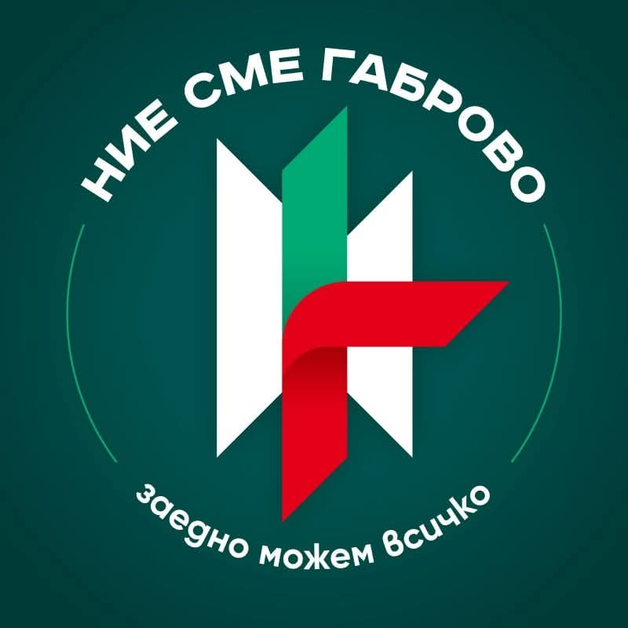

Образец: как изглежда една статия
Показва подзаглавията, списъците, цитатите и снимките, които може да използвате в текста.
Тази страница показва как изглеждат различните елементи в една статия. Копирайте този файл, когато пишете нова.
Подзаглавие
Подзаглавията разделят дългия текст на части. Читателят вижда веднага за какво става дума във всяка от тях.
Списък
Три неща помагат една статия да бъде прочетена докрай:
- кратко заглавие, което казва за какво е текстът;
- най-важното в първия абзац;
- източник за всяко число и всеки цитат.
Цитат
Заедно можем всичко.
Снимка

Връзка
Връзките към други страници изглеждат ето така.